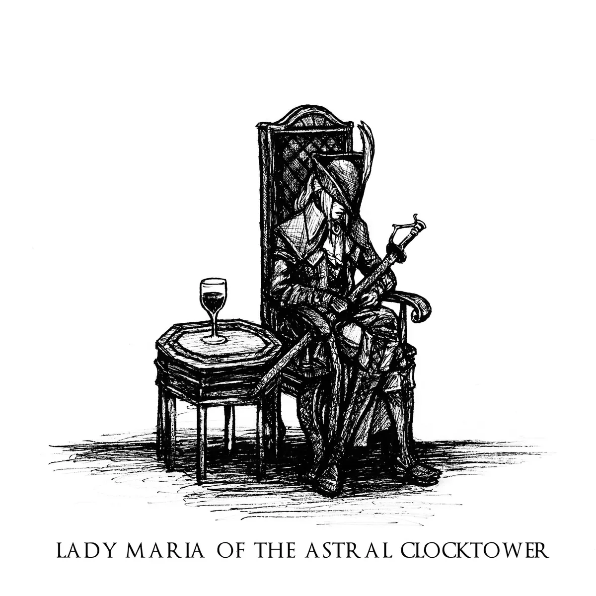
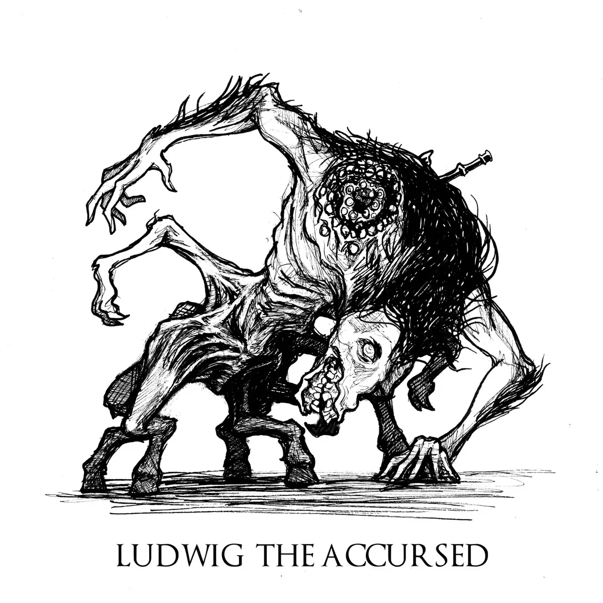
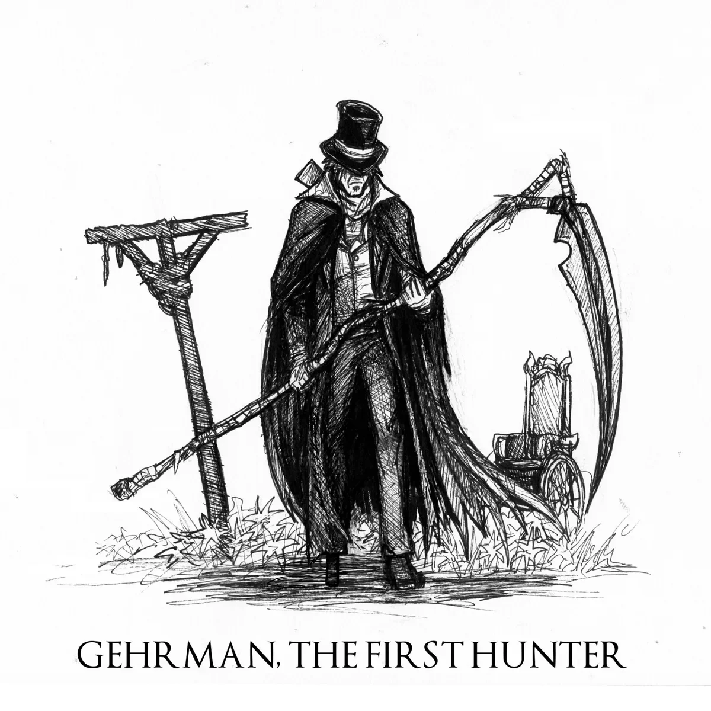
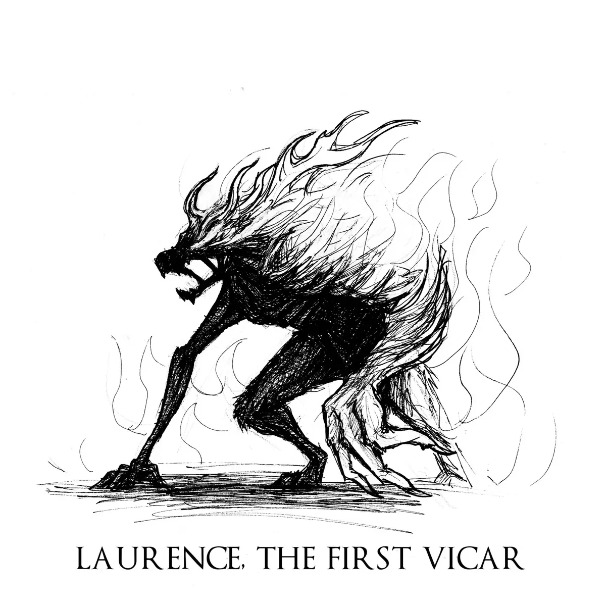

¿Que es Bloodborne?
Bloodborne es un videojuego de rol de acción dirigido por Hidetaka Miyazaki,
desarrollado por From Software y distribuido por JapanStudio y Sony Computer Entertainment para la
plataforma de PlayStation 4. El videojuego sigue las acciones del personaje del jugador, el Cazador,
a través de Yharnam, una ciudad ficticia de estilo victoriano, cuyos habitantes han sido afectados con
una enfermedad de transmisión sanguínea anormal. Al despertar en Yharnam durante la noche de «la caza»
tras recibir un tratamiento de la conocida «sangre milagrosa», el Cazador busca algo conocido solo como
paleblood ("sangre pálida" en español) para terminar la cacería.
El videojuego cuenta con una vista
en tercera persona y su jugabilidad se enfoca en el combate basado en armas y la exploración. Los
jugadores luchan contra enemigos bestiales, entre ellos jefes, usando elementos tales como armas blancas
y de fuego, viajando a través de la historia, explorando las diferentes áreas del videojuego,
interaccionando con los NPCs, además de descubrir y desentrañar los numerosos misterios de ese mundo.
Su trayecto en la industria de los videojuegos
Fue anunciado oficialmente en el evento Electronic Entertainment Expo 2014 de Sony el 9 de junio de
2014, siendo publicado finalmente de manera internacional a finales de marzo de 2015 recibiendo
aclamación de la crítica especializada. Muchos críticos aplaudieron la atmósfera y aspecto visual del
videojuego, su diseño de mundo interconectado, el diseño de los personajes, en particular el de los
enemigos, el desafiante juego de ritmo rápido, la historia intrigante y la banda sonora, que algunos
incluso promocionan como «gloriosa». Inconvenientes iniciales de frame rate y extensos tiempos de carga,
sin embargo causaron que el videojuego generara algunas críticas. En abril de 2015, el videojuego había
vendido más de un millón de copias.
Ha sido condecorado con el Premio de Excelencia (compartido con
otros 14 títulos), otorgado por la revista Famitsū de la distribuidora Enterbrain a aquellos videojuegos
lanzados en Japón entre el 1 de enero y el 31 de diciembre de 2015.
Sus Bosses mas memorables

Lady María de la Torre del Reloj Astral era ciudadana de Cainhurst y pariente lejana de la reina Annalise. También fue una de las primeras cazadoras en unirse a la caza nocturna. Estudió con Gehrman, el Primer Cazador, a quien María había admirado, sin saber su curiosa manía hacia ella. A pesar de ser ciudadana de Cainhurst, donde disfrutaban de los usos extravagantes de la sangre, ella prefería su Rakuyo, que en cambio requería destreza y habilidad para manejarlo con eficacia. En algún momento durante su época como cazadora, María participó en la excursión de los eruditos de Byrgenwerth a la Aldea de los Pescadores, tras enterarse de las mutaciones que los aldeanos habían sufrido en presencia de Kos, un Grande cuyo cadáver había llegado a la orilla cerca de la aldea. La misión pasaría factura a la moral de María, ya que ella, junto con los eruditos y otros cazadores, había participado en la caza y mutilación de los aldeanos, y en la violación del cuerpo de Kos.

La parte inferior de su cuerpo es delgada, aparentemente desollada, y luce cuatro patas con
pezuñas asimétricas, pero fuertes, mientras que la parte superior del torso es un retrato de
pura locura: entre dos largos brazos con grandes garras afiladas, sobresale una joroba
desproporcionada que muestra unas fauces circulares delineadas. por dentro con dientes
irregulares y grupos de ojos, y su rostro, aparentemente ciego del ojo derecho, es un rostro
derretido de piel arrugada y dientes torcidos, estirado sobre una cabeza alargada que se asemeja
vagamente a la de un caballo.
Ludwig fue el primero de muchos cazadores de la Iglesia de la
Curación que vinieron, muchos de los cuales eran clérigos. Así las cosas, los clérigos se
transformaron en las bestias más espantosas.
Bajo el liderazgo de Ludwig, la Iglesia de la Curación obtuvo su propio núcleo de cazadores.
Ludwig entrenó a sus cazadores para que fueran espartanos honorables, e incluso entrenó a
yharnamitas comunes, uniendo efectivamente a la población y usándola para combatir el flagelo.

Gehrman usa una armadura única e inalcanzable, posee la Burial Blade y una variante especial del Hunter Blunderbuss. Si el jugador lo derrota, la Presencia Lunar aparecerá casi inmediatamente después, y resultará en dos finales diferentes dependiendo de si el Cazador ha consumido al menos tres terceros cordones umbilicales.

Laurence es el jefe opcional del DLC de Bloodborne y se encuentra en la Gran Catedral de la Pesadilla del Cazador. Al principio del juego, cuando no se ha derrotado todavia a Ludwig, Laurence se encuentra en la Gran Catedral, tumbado el final de ésta. En su mano porta un objeto imprescindible para accionar el ascensor que lleva al manicomio. En una parte posterior del juego, al volver a la Gran Catedral, se podrá luchar contra este enemigo. Laurence, en la forma en la que se encuentra en la Pesadilla del Cazador, es representado por una clase de Bestia Clérigo en llamas. Al quitarle la mitad de la vida, la parte de su cuerpo de cintura para abajo se esfumará y Laurence usará más ataques de fuego y lava.